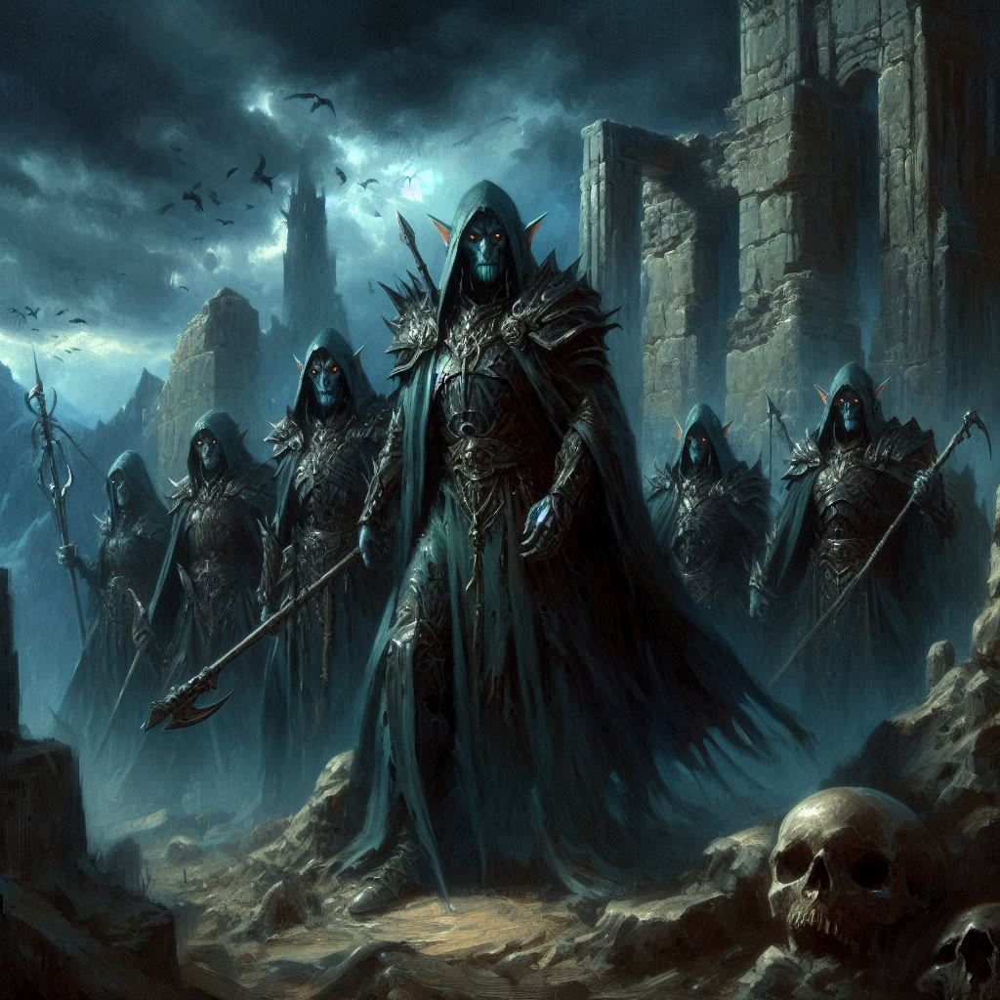

The Dungeons of Umbra'Thal

“Elias is right,” you whisper. “I cannot trust either of you. Your lies and betrayals end here today.”
You draw your sword and levy it at Princess Hawthorn. Her eyes narrow as she draws her own sword.
Behind you, Baider and Elias flank Jorsh, each attacking him from opposing sides. You lose sight of their attack as Hawthorn’s blade slices through the air next to your face. You spin aside and deliver a potentially lethal blow with your sword, but your slash is blocked as your blade meets Hawthorn’s.
The clash of steel echoes through the canyons of the Realm of Shadows as you tighten your grip on your sword, its weight a familiar anchor against the chaos. Hawthorn’s blade sparks against yours, her expression as sharp as the glinting edge of her weapon.
"You’re out of your depth, half-elf," she sneers, twisting her wrist to push you back. But you dig your heels into the stone, the sting of fatigue in your arms drowned out by a surge of defiance.
"No more games, Hawthorn," you retort, sidestepping her strike and landing a glancing blow against her armor. "You can’t take this power for yourself!"
Elias and Baider are locked in their own struggle with Jorsh across the room, the rogue sorcerer weaving spells with frantic determination. The room pulses with magic—a living, breathing force emanating from the dark altar at its center. Onyx lies bound nearby, his face pale but defiant as shadowy tendrils snake toward him, drawn by Varis’s abandoned ritual.
You have no time to glance back. Hawthorn advances again, her blade arcing toward your shoulder. You block, but the force sends a jarring vibration up your arm.
"You think you’re a hero, Kira?" she spits. "You’re just a lost child chasing approval you’ll never earn."
Her words sting, but you grit your teeth and push forward. You spin, delivering a strike that knocks the sword from her hand. With a final, desperate swing, you catch her leg, sending her sprawling to the ground. Your blade hovers at her throat, and for a moment, the commotion stills.
"Yield," you say, breathless. She hesitates, fury warring with resignation in her eyes, before her hands fall limp at her sides.
Behind you, a thunderous crash draws your attention. Elias and Baider, bloodied but determined, are battling Jorsh with grim focus. Baider lands a blow with his hammer, but before the strike can finish him, Jorsh whispers a spell, and in a flash of violet light, he’s gone.
“Coward!” Baider roars, slamming his hammer into the ground in frustration.
But there’s no time to regroup. The sound of boots and guttural commands fills the air, and a squad of dark elves come crashing around the bend in the canyon. Their weapons glint with cruel precision as they charge.
“Brace yourselves!” Elias yells, standing protectively in front of Onyx.
You barely have time to raise your sword as the dark elves descend. Their strikes come with lethal precision, their numbers overwhelming. You fight desperately, but the exhaustion from the day’s battles weighs on you. One by one, your companions fall, struggling against the onslaught.
A blow to your side sends you reeling, and before you can recover, a crushing strike to your head plunges you into darkness.
When you awaken, the air is damp and bitterly cold. Your wrists ache from iron shackles, and your head throbs with pain. Around you, the dungeons of Umbra’Thal stretch endlessly, their jagged walls dimly lit by faintly glowing runes.
Elias is chained beside you, unconscious but breathing. Across the room, Baider glares at the guards with fury in his eyes, his tusks bared in defiance. Hawthorn sits slumped against the wall, her head bowed, her earlier arrogance stripped away. Of Jorsh, there is no sign.
The weight of failure presses down on you. The ritual isn’t stopped, and Varis’s plan is still in motion. Somewhere above, the portal from the Shadow Realm to your beloved Belladonna may already be opening, the darkness poised to consume Belladonna and the Kingdom of Yew.
For the first time, the certainty you’ve carried falters. The thought burns in your chest: you may have lost not just the battle, but the war.
And yet, as you look around at your battered companions, you know the story isn’t over. Not yet.
You close your eyes, resolve flickering like a fragile flame. You’ll find a way. You must. For Baider. For Elias. For the realm.
But for now, the shadows close in.